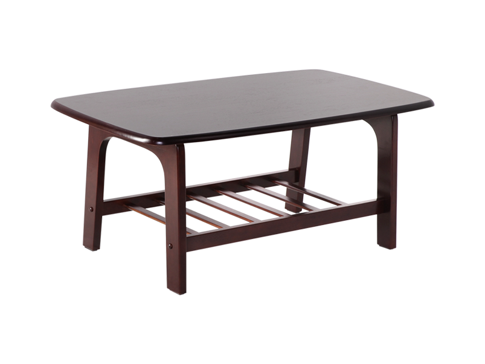

Case Study
Google Lens  VS MobileNet
VS MobileNet

Output On Mobile Net : Bottle
Output On Google Lens : Water Bottle
Result- Both are Accurate.

Output On Mobile Net : Modem
Output On Google Lens : Book
Result- Google Lens is more Accurate.

Output On Mobile Net : Laptop
Output On Google Lens : Television
Result- Mobile Net is Accurate.

Output On Mobile Net : Rubber Pencil
Output On Google Lens : Pencil
Result- Mobile Net is more Accurate.

Output On Mobile Net : Table
Output On Google Lens : Desk
Result- MobileNet is more Accurate.
Mobile Net Wins. Out of 5 mobile net identifies 4 images accurately.